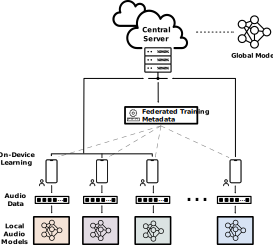

Aaqib Saeed
Research Scientist @ Philips Research
Self-Supervised Learning, Human-Centric AI, Sensing, Audio, & On-device ML
 |
Federated Learning with Noisy Labels
Vasileios Tsouvalas, Aaqib Saeed, Tanir Ozcelebi, Nirvana Meratnia Short Paper @ Interpolation and Beyond - Workshop at NeurIPS 2022 Federated learning (FL) approaches assume high-quality labels are readily available on users' devices; in reality, label noise can naturally occur in the FL setting and follows a non-i.i.d. distribution among clients. Here, we propose FedLN, a framework to deal with label noise across different FL training stages: FL initialization, on-device model training, and server-side model aggregation. Extensive experiments on various publicly available vision and audio datasets demonstrate a 24% improvement on average compared to other existing methods for a label noise level of 70%. We further validate the efficiency of FedLN in human-annotated real-world noisy datasets and report a 9% increase on average in models' recognition performance. |
|

|
Federated Self-Training for Semi-Supervised Audio Recognition
Vasileios Tsouvalas, Aaqib Saeed, Tanir Ozcelebi @ ACM TECS 2022 Short Paper@ IEEE ICASSP 2022 Federated Learning is a distributed machine learning paradigm dealing with decentralized and personal datasets. Since data reside on devices like smartphones and virtual assistants, labeling is entrusted to clients or labels are extracted in an automated way for learning models. However, in the case of audio data, acquiring semantic annotations can be prohibitively expensive and time-consuming. As a result, an abundance of audio samples remains unlabeled and unexploited. We propose FedSTAR, a semi-supervised learning approach for audio recognition. FedSTAR leverages unlabeled data via self-training to improve the generalization of audio models. We show that with as little as 3% labeled data available, FedSTAR on average can improve the recognition rate by 13.28% compared to the fully supervised federated model. We further demonstrate that self-supervised pre-trained models can accelerate the training of on-device models, significantly improving convergence within fewer training rounds. |
Acknowledgments
This site was prepared using the Distill template which is adapted and kindly open-sourced by Pierre Sermanet.